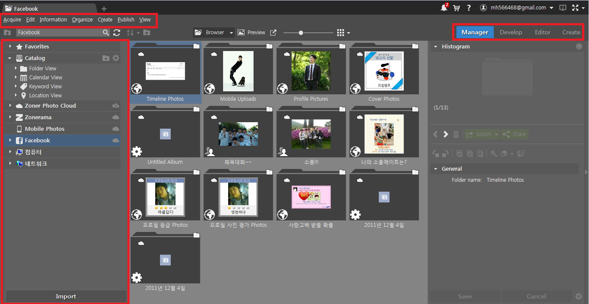
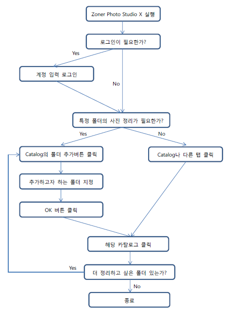
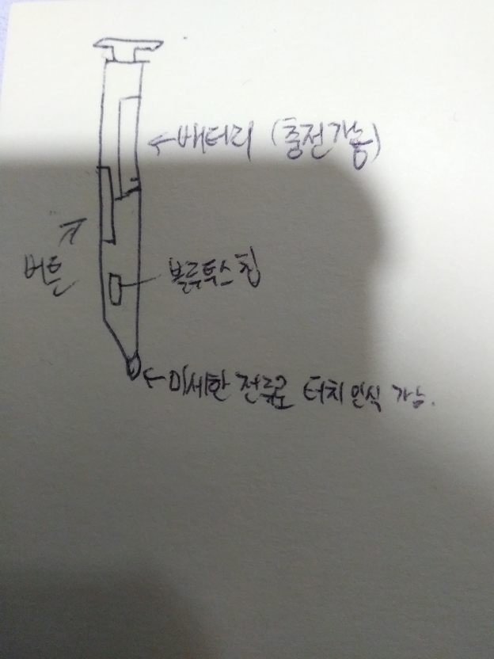

1. interface review for a picture organizing software
여러 Picture Organizing Software 중 하나를 골라 interface를 평가할 때 사용되는 방법들로 평가하고자 한다. 그 중 TopTenReviews에서 2위를 기록한 Zoner Photo Studio X의 Interface를 선택하였고, 이를 Major Principle들과 Certain Guideline, 잠재적인 이용자들의 Mental model과 Memory Capability의 관점에서 평가할 것이다.
ㆍ Major Principle
Windows 7 상에서 이용해보며 Review하였기에, Windows 7 Design Principles에 따라 평가해보았다.

Zoner Photo Studio X의 전반적인 Interface
1) Reduce Concepts to Increase Confidence
쓸 데 없는 기능을 최소화시켰는지에 대한 기준이다. 화면을 보면 왼쪽 상단에 Acquire, Edit, Information, Organize, Create, Publish, View와 같이 Picture Organizing Software를 사용할 때 필요한 기능들을 항목별로 잘 분류해두었다. 오른쪽 탭에는 Manager, Develop, Editor, Create 기능들로 사진을 관리하고 사진에 대해 간단한 편집 기능들과 좀 더 전문적인 기능들이 포함되어있다. 브라우저에서 우클릭 시에는 복사 붙여넣기와 같은 기능도 제공한다. 따로 불필요한 컨셉이나 기능들이 있지 않고, 주로 사용되는 기능들이 포함되어있다.
2) Small Things Matter, Good and Bad
작은 요소들이 큰 영향을 미칠 수 있다는 것인데, 왼쪽 탭을 보면 Favorite, Catalog, Zoner Photo Cloud 등등 다양한 저장장소에서 사진들을 Folder, 날짜, 키워드, 지역을 기준으로 자동으로 분류해주는 기능을 가지고 있다. 이런 점은 일일이 폴더를 만들어 정리해야하는 번거로움을 덜어주어 더 사용하기 좋게 만드는 것 같다.
3) Delight
오른쪽 탭의 Manager, Develop, Editor, Create 버튼은 각각 마우스를 가져다댔을 때 변하는 색이 다르다.
4) Solve Distractions, not Discoverability
기본적으로 자주 쓰이는 기능들이 양쪽 탭에 잘 정리가 되어있고, 파일을 이동시키거나 하는 것들도 우클릭으로 대부분 해결되니 어렵게 기능을 찾으러 다닐 필요가 없다.
5) Time Matters; Build for People on the Go
각 계정에 로그인을 하여 Zoner 자체 클라우드, 모바일 기기, 페이스북과 연동이 가능하며 이는 장소에 구애를 받지 않고 사진을 옮기거나 Organize하고 싶은 사람들을 위한 최적의 기능이라고 생각한다.
6) Value the Full Lifecycle of the Experience
사진 편집 기능을 제외하고는 설치하고 적응하는 것에 굉장히 짧은 시간이 걸렸다.
7) Be great at “Look” and “Do”
평점이 높은 이유. 사람들의 기대를 충분히 만족시킬만하다고 생각한다.
ㆍ Guide Line
사진을 정리해주는 Software인 만큼 Visual Design에 대한 Guide Line이 잘 지켜졌는지 평가하기 위해 Apple의 Human Interface Guidelines, Visual Design에서 Layout 파트를 참고하였다.
1) Provide useful, focused information in a clean layout that’s easy to scan from the driver’s seat.
정렬 기능, 새 파일, 새로고침 등의 기능에 대해 한 눈에 알아볼 수 있는 아이콘을 배치하였고, 레이아웃의 비율도 보기 좋은 비율을 갖추어 운전석에서도 충분히 한 눈에 스캔 가능할 것이다.
2) Maintain an overall consistent appearance throughout your app.
전체적으로 무채색 계통의 색감을 이용하고, 부드러운 Frame으로 보기 편하다.
3) Ensure that primary content stands out and feels actionable.
Major Principle에서 평가했던 내용들로, 충분히 주요 콘텐츠들이 두드러지고 실용성있어 보이게 디자인한 듯하다.
이 외의 Guideline들은 모바일 기준으로 되어있어 참고하지 않았다.
ㆍ Mental Model
일반적으로 사용자들은 간편하게 사진들을 한 눈에 보기 쉽게 모아주고 정리해주는 것을 기대하고 사진을 보정하기 위해 프로그램을 사용할 것이다. 그러한 점에서 이 Software는 꽤나 좋다고 평할 수 있다. 무엇보다 사진에 적용되어 있는 사진을 찍은 장소 등의 정보를 이용하는 것은 여행사진을 주로 찍는 사람들에겐 더할 나위 없이 좋아 보인다 (국가 단위부터 더 세밀한 단위까지 정리해준다). 사진을 보정하기 위한 기능을 사용할 때에도 오른쪽 탭에서 색에 따라 Analyze된 그래프를 보여주어 사진 하나하나 보정하기도 편할 것이다.
ㆍ Memory Capacity
먼저 하드디스크 용량은 200MB 정도를 차지하는 데, 일반적으로 노트북을 사용한다 해도 128GB 이상 저장공간을 가지고 있으니 문제가 되지 않는다. 프로그램 실행 중에는 RAM을 총 150MB정도를 차지하는데, 이 또한 일반적으로 4G이상의 RAM을 사용하는 최근의 상황을 생각해보면 아무런 문제가 되지 않는다. 즉, Memory Capacity 면에서도 최적화가 잘 되어있다.
2. Decision Model of Zoner Photo Studio X
 2. Decision Model of Zoner Photo Studio X3. GOMS methodology
GOMS-KLM을 통해 predicted execution time을 계산하고자 한다. 로그아웃해둔 상태로 Zoner Photo Studio X를 실행시키고 로그인한 뒤, 특정 폴더 지정하여 카탈로그를 추가하고 카탈로그를 확인 후 종료하는 것까지 계산할 것이다.
1) Zoner Photo Studio X를 마우스 포인터로 가리킴 (P)로 P * 11 + B * 13 + K * 30 = 1.1 * 11 + 0.1 * 13 + 0.08 * 30 = 15.8 s 정도로 예측된다. 실제로 해본 결과 22.99초로 예상보다 7초 정도 늦어졌다. 이는 처음 로그인할 때, 로그인 과정에서 생기는 대기 시간 때문으로 예상되므로 이를 제외한다면 거의 비슷한 수준이다.
2) 더블 클릭 (B + B)
3) 로그인 창 이메일 입력 (K * 18)
4) 엔터키 입력 (K)
5) 비밀번호 입력 (K * 9)
6) 엔터키 입력 (K)
7) Catalog의 폴더 추가 버튼을 마우스 포인터로 가리킴 (P)
8) 클릭 (K)
9) 폴더를 찾아감 (평균 (P + B) * 5)
10) 확인 버튼 클릭 (P + B)
11) OK 버튼 클릭 (P + B)
12) Catalog 클릭 (P + B)
13) Folder View 클릭 (B)
14) 해당 폴더 클릭 (B)
15) 종료 버튼을 클릭 (P + B)
4. Galaxy Note 9 Bluetooth Pen
 Galaxy Note 9 Bluetooth Pen Hardware에 대한 예상해본 그림 펜의 하드웨어적인 형태는 위 그림과 같을 거라고 예상된다. 갤럭시 노트 9 내에도 펜을 위한 전용 블루투스 칩이 따로 존재할 것으로 생각한다. 카메라 기능을 사용할 때에는 버튼 Interrupt 입력이 짧은 시간 내에 한 번 들어오면 사진을 찍히고, 두 번 입력되면 카메라 전환이 되는 형태로 소프트웨어가 적용되어 있다. 휴대폰을 터치할 때의 인식은
1) 펜 촉 부분의 미세한 전류가 인식됨과 같이 작동할 것으로 생각된다.
2) 인터럽트 발생
3) CPU는 터치 Interrupt를 처리하고 Interrupt Handler에 보냄
4) Interrupt Handler는 터치한 위치에 따라 알맞은 행동을 취함